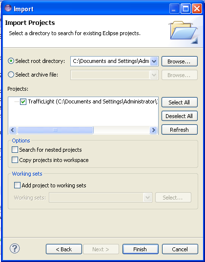
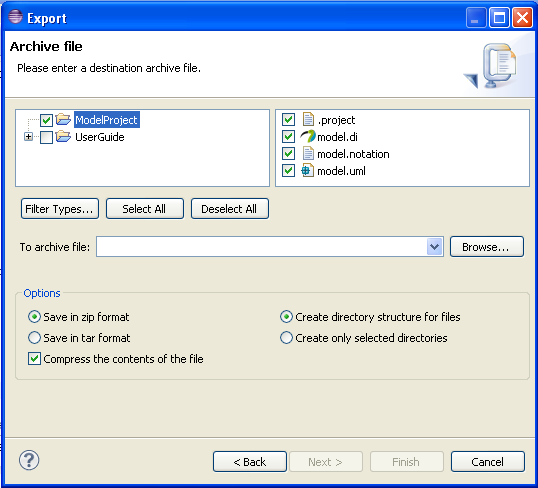
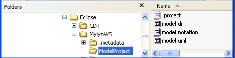
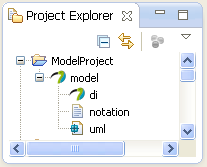

{kind=link}
{kind=link}
{kind=link}
{kind=link}
{kind=link}
{kind=link}
{kind=link}
 and browse to the perspective to open. It is also possible to reorganize a perspective, open/close views, customize menus, etc. and then save the perspective with a new name by Window > Save Perspective As ....
and browse to the perspective to open. It is also possible to reorganize a perspective, open/close views, customize menus, etc. and then save the perspective with a new name by Window > Save Perspective As ....Papyrus is an environment for editing any kind of EMF model, particularly supporting UML 2 (Unified Modeling Language (UML) version 2.4.1 ) and related modeling languages such as SysML (System Modeling Language ) and MARTE (Modeling and Analysis of Real-Time and Embedded systems ). Papyrus also offers very advanced support for UML profiles that enables users to define editors for DSLs (Domain Specific Languages) based on the UML 2 standard.
Papyrus is a collection of plug-ins and features on top of the Eclipse Modeling Framework. For more information about Eclipse, please go to the Eclipse web site eclipse.org. Some of the terminology used in this Papyrus user guide are basic Eclipse concepts and briefly described here. To get more information about the Eclipse concepts, please visit the Workbench User Guide by selecting Help > Help Contents from within Eclipse.
Papyrus is built on the extensible Eclipse framework and is an implementation of the OMG (Object Management Group) specification Unified Modeling Language (UML) version 2.4.1. Papyrus is a comprehensive UML modeling environment, where many diagrams can be used to view different aspects of a system. Behind all diagrams, there is a model where all modeling elements, used in these diagrams, are kept. The model keeps the consistency between the diagrams.
UML diagrams can help system architects and developers understand, collaborate on and develop a system. Architects and managers can use diagrams to visualize an entire system or project and separate systems into smaller components for development.
System developers can use diagrams to specify, visualize, and document systems, which can increase efficiency and improve their system design. Also code can be generated from UML models.
Since UML is general-purpose modeling language in the field of software engineering, it is possible to adapt UML to specific domains. This is done by creating and applying UML profiles. Papyrus is a complete UML modeling environment, which also can be used to develop UML profiles.
In this user guide, bold text is used for menu selections, e.g. Help > Welcome means from the Help item on the main menu, select the Welcome item.
A context menu is the pop-up menu that appears when right clicking on something, e.g. right click on a class select New Child > Create a new Operation, will create a new operation on the class, using the class' context menu.
When text should be typed in, it is indicated by inline code, e.g. this text should be typed in.
Fields in wizards, pop-up windows, different editors, radio buttons and check boxes are indicated by italic text, e.g. set the field Name to MyClass.
It is a several step process to install Papyrus and its optional components. The Eclipse Standard must first be installed and when that is done, Papyrus is installed on top of Eclipse Standard.
Eclipse Standard is installed from the Eclipse download page. On the download page select Eclipse Standard <version number> to install. Follow the install wizard to complete the installation.
When Eclipse Standard is installed, go to Help > Install New Software and type in http://download.eclipse.org/releases/kepler/ in the field named Work with:.
Note! When this user guide was written, the Kepler release of Eclipse was the latest. Select the latest official Eclipse release.
Note! In some industrial environments, a proxy has to be used instead of this type of direct URL to the Eclipse web-site. To configure Eclipse to use a proxy is done under Windows > Preferences and General > Network Connections
In the Name column of the wizard, scroll down to Modeling and expand to the next level. Under Modeling, select Papyrus UML and follow the installation wizard to complete the installation.
When Eclipse is restarted, the environment is now ready for UML modeling.
After installation of the basic Papyrus feature, go to Help > Install Papyrus Additional Components. In the wizard that pops up, select the needed additional Papyrus components, e.g. to be able to do UML RT modeling, the Real Time component is needed. It is also recommended to install the Diagram Stylesheets and Papyrus Compare components. Follow the installation wizard to complete the installation.
Papyrus is built on the Eclipse framework, so most of its look and feel is inherited from Eclipse.
The Eclipse framework has a plug-in architecture, where plug-ins can be grouped into features. Features and plug-ins can be added to an existing Eclipse installation.
The plug-in architecture applies also for all subsystems. A plug-in is the smallest unit of Eclipse Platform functionality that can be developed and delivered separately. Usually, a small tool is written as a single plug-in, whereas a complex tool has its functionality split across several plug-ins. Except for a small kernel known as the Platform Runtime, all of the Eclipse Platform's functionality is located in plug-ins. Plug-ins can be grouped into features.
Plug-ins are coded in Java. A typical plug-in consists of Java code in a JAR (Java Archive) library, some read-only files, and other resources such as images, Web templates, message catalogs, native code libraries, and so on. Some plug-ins do not contain code at all. One such example is a plug-in that contributes online help in the form of HTML pages. A single plug-in’s code libraries and read-only content are located together in a directory in the file system, or at a base URL on a server. There is also a mechanism that permits a plug-in to be synthesized from several separate fragments, each in their own directory or URL. This is the mechanism used to deliver separate language packs for an internationalized plug-in.
Each plug-in has a manifest file declaring its interconnections to other plug-ins. The interconnection model is simple: a plug-in declares any number of named extension points, and any number of extensions to one or more extension points in other plug-ins.
The workspace is located in the file-system and is the place where Eclipse resources (files, folders and projects) are stored. When Eclipse is started, a pop-up window appears, where a workspace should be selected. One instance of Eclipse is connected to one workspace.
In the file system all resources are stored in the selected workspace and in the same hierarchical structure as in the Project Explorer.
Resources are a collective term for the projects, folders, and files that exist in the workbench. The resources are stored in the workspace, where the projects are on the first level. Inside a project, there are files and folders in the same hierarchical structure as in the Project Explorer and Model Explorer.
Files appear in the file system as files and folders are Unix directories or Windows folders and may contain other files and folders. Each time a file is saved, a copy is saved, which makes it possible to replace the current file with a previous edit or even restore a deleted file. Earlier versions of a file can be compared to the contents of all the local edits. Each edit in the local history is time stamped, i.e. is uniquely represented by the date and time the file was saved.
Projects can be viewed as the top level folder in the file system under the workspace. In Eclipse there are different types of projects, e.g. Model, C/C or Java projects and they are the top level resource in the Project Explorer. Projects can be closed and opened in the Project Explorer.
The workbench is the Eclipse user interface and is used to navigate, view, and edit resources in a workspace, i.e. the workbench is the Eclipse IDE's application window. The workbench presents one or more editors and views that are gathered into adjustable groups (perspectives).
The first time Eclipse is started, after the installation, a Welcome page is presented. Take a few minutes to explore the product overview and getting started information that is located here.
To return to the ordinary workbench, just click on the workbench icon up to the right. When starting Eclipse, subsequent times, the workbench appears directly. To visit the welcome page at any time, just select Help > Welcome.
The title bar of the workbench window and the little Papyrus icon to the right indicates which perspective is active. In this example, the Papyrus perspective is in use. The Project Explorer and the Model Explorer, Outline, Properties views, etc. are open, along with a Class Diagram editor and its tool palette.
It is easy to toggle between perspectives by clicking on some shown perspective in top of the right hand corner or open a new one by clicking on the Open Perspective icon and browse to the perspective to open. It is also possible to reorganize a perspective, open/close views, customize menus, etc. and then save the perspective with a new name by Window > Save Perspective As ....
Views and editors are the main visual entities that appear in the workbench. Any given perspective can contain multiple editors and a number of surrounding views that provide context.Views provide different ways to visualize, navigate and edit the resources in the Eclipse workspace. Views can be single or stacked on top of each other.
Views, including editor views, can be resize, moved, detached. In addition, a view can be maximized to cover the entire workbench by double-clicking on its tab. By double-clicking once more, it will return to its original size. Some views has a view specific menu, e.g. Project Explorer view, where some specific view settings could be done.
To add a new view to the active perspective, use Window > Show Viewand if the desired view does not appear on top of the pop-up menu, select Other, which opens up a view browser, where all available views are organized in different categories.
In the workbench figure, above, several single views appears, e.g. Outline, Class Diagram editor, Help, Project Explorer and Model Explorer views. The single view has only one tab with the view name. By draging a single view tab and release it on another single view tab, stacked views are created.
In the workbench figure, above, also stacked views appear, e.g. Properties and Model Validation views. To select the one that should be on top of the stack, just click on its tab and it becomes visible. By selecting a stacked view and drag it besides another view in the workbench, a single view will appear.
To customize the settings for the Eclipse workbench and the installed features, the preference window is used. Use Windows > Preferences to open it, e.g. under General > Keys in the preference window there are shortcuts and keys defined for the user interface. Here they can be redefined or own sets could be defined.
The preference window pages can be searched using the filter function. To filter by matching the page title, simply type the name of the page and the available pages will be presented below.
The filter also searches on keywords. By the history controls (the left, right and drop-down arrows up in the right corner of the preference window) it is possible to navigate through previously viewed pages. To step back or forward several pages at a time, click the drop-down arrow and a list of the most recently viewed preference pages are displayed.
Projects can be shared between workspaces by using project import and export, which are done through wizards. To open the import wizard, use File > Import and in several steps select what, where from and if it should be imported as a copy or just referenced. To export resources, There are also an export wizard, which is opened by File > Export and select details about what should be exported, if it should be compressed and where to export it to.
 Figure 9: Import wizard |  Figure 10: Export wizard |
When importing a project into the used workspace, it can be copied by checking the box Copy ... in the import wizard. If this check box is unchecked, there will just be a reference to the other workspace and when editing that project, it will be edited in its original place. Be aware of that when doing so, several instances of Eclipse may edit the same resource.
When exporting a project, browse to the place where to export it to name it and select if and how compression should be used.
Papyrus is a comprehensive UML modeling environment, where diagrams can be used to view different aspects of a system. Behind all the diagrams, there is a model where the modeling elements, used in these diagrams, are stored. The model maintains the consistency between all diagrams.
A model is the collection of all the modeling elements and relationships that compose a software system. Papyrus enables the creation, viewing and manipulation of UML diagrams as specified in the UML 2 specification.
The model defines every element, representing some part of the system. Multiple model diagrams can reference an element many times. Each of the different diagrams can view a different aspect of the system.
The model is the basis of the diagrams and keep the diagrams consistent. The diagrams are stored in the model's hierarchical structure. Some are owned by a modeling element like a class and some are just organized into packages and then owned by the package (a.k.a folders in basic Eclipse projects). Note! the top level of the model is the model package, which is a special kind of a package.
The model is the basis for all diagrams and maintains the consistency between the diagrams. The model is a collection of definitions of elements that compose the system and the relationships between them. Diagrams can be used to view subsets of the underlying model and from various view points. A model of a system may require many different diagrams to represent different views of the system for different project stakeholders.
In Papyrus, diagrams are be viewed and created in the Model Explorer view. The Model Explorer shows diagrams in their logical place within the model.
The visual representation of a system that diagrams provide can offer both low-level and high-level insights into the concepts and design of a system.
The tutorials are focused on selected topics regarding the use of Papyrus and contains step by step instructions on how to create and manipulate the workbench and models.
This tutorial is about to understand the workbench environment and the basic Eclipse terminology.
This part demonstrates the differences between the Papyrus and the Resource perspectives and also how to customize the Resource perspective.
Explore the Papyrus default menus, toolbar, and views in the Papyrus perspective.
Explore the default menu, toolbar, and views in the Resource perspective and customize a menu.
In this section a new project, folder and files will be created in the Resource perspective.
Create a new project in the Resource perspective by completing these steps:
My Project and click Finish.Create a folder in the project:
Text Files in the the field Folder name, and then click Finish.Create a file in the folder:
My File as the file name and click Finish. (Notice that a text editor opens in the editing view for the created resource)Create another file in the Text Files folder, using the workbench menu this time.
My Other File as the file name and click Finish.This section demonstrates how to manipulate views and editors.
Maximize one of the editors to expand the viewable area:
Currently, the editors are stacked one in front of the other. Try tiling them horizontally and vertically:
Try moving a view:
Some views has view menus, e.g. Project Explorer view, which is indicated by a down arrow in the upper-right corner of the view. Click this down arrow of the Project Explorer view and review the pull-down menu options specific for this view.
If a view does not appear in the workbench, it can be open by using the Window menu:
Project Explorer in the filter text box.This section demonstrates how projects can be shared between users and workspaces using the export and import feature.
Export My Project to a compressed file:
My Project as the file name. Click OK.Remove My Project from the workspace:
Delete project contents on disk check box. Click OK. Note: If this check box is unchecked, the resource will just be deleted from the Workbench, but it will still exist in the workspace. (Notice My Project is no longer listed in the Project Explorer)
Import My Project from a compressed file:
Import wizard, check the check box next to My Project and click Finish to perform the import process. (Notice My Project is once again listed in the Project Explorer)
The basic features of the Eclipse workbench have now been demonstrated.
This is a tutorial about general class and object modeling using Papyrus.
Create a new UML modeling project as follows:
My Design Model and click Next.Create two packages in the model:
Clients in the the field Name.Server in the the field Name.Create two classes in the Server package. One is called Server1 and the other is called DataClass1:
Server1 in the the field Name.DataClass1 in the the field Name.Create three different client classes in the Clients package:
Client1 in the the field Name.Client2 in the the field Name.ClientRoot in the the field Name.Create two class diagrams in the model:
Packages in the Enter a new diagram name pop-up window.Classes in the Enter a new diagram name pop-up window.Field1 in the field Name and by the Type field click on the  key and select Integer from the UML Primitive Types. This cause the created attribute to be named Field1 and to be of type Integer.
key and select Integer from the UML Primitive Types. This cause the created attribute to be named Field1 and to be of type Integer.service1 in the the field Name and by the Owned parameter field click on the  key.
key.service1return in the Name field, select return from the Direction field drop down list and by the Type field click on the key and select Integer from the UML Primitive Types. This causes the return type of the operation to be defined as an integer.Create a Dependency relationship between the Clients and the Server packages:
Dependency as the name of the relationship.Create a Generalization relationship between the classes Client2 and Client1, i.e. make Client2 a sub-class of Client1:
Create a Composite relationships between the classes ClientRoot and Client1 plus ClientRoot and Client2:
cr-c1.cr-c2.Create a new package in the model:
Objects in the the field Name.Create objects (instances of classes) in the Objects package:
clientObj1 in the the field Name and by the Classifier field click on the key. In the Classifier window that pops up, browse to the Client2 class and click on the 
Follow the same pattern to create:
Create a class diagrams in the model to depicts the created objects:
Objects in the the Enter a new diagram name pop-up window.Create a Dependency relationship between the clients and the server objects:
In this tutorial the following model was created:


Note! The inherited attributes depicted in figure 13 on the Client2 class.

Papyrus can be used to do
In Papyrus, different UML profiles can be applied. When installing Papyrus, as described in section Installation , also the UML, UML RT, SysML and MARTE profiles can be added. When creating a new Papyrus project, the type of Papyrus project is selected. Project types to chose from are SysML, Profile and UML.
When modeling in Papyrus, three types of resources are stored in the workspace.
 Figure 15: Resources in the file system |  Figure 16: Resources in the Project Explorer |
Note! In this case the model is contained in three files. When working in an industrial context, the model may need to be split up into several fragments in order for several designers to work concurrently with the same model. This is described in section Papyrus in a team environment .
When Papyrus is installed a predefined perspective called Papyrus is made available. This is the perspective to use when modeling with Papyrus. The Papyrus perspective can be customized to the user needs and saved as new perspective ( see section Workbench ).
The Project Explorer view is used to browse, select and manipulate resources in the workspace. Projects or working sets are the top level in this view. From the Project Explorer's (right click on the white space) context menu, e.g. new projects can be created.
In some views, as in this case, there is a view specific menu (indicated in Figure 13 with a red ring). Here some settings can be applied for the view, e.g. if the top level should be working sets or projects.
In the Model Explorer view, the model that has been opened in the Project Explorer, can be browsed and edited. Model elements can be added by using the context menu of any existing modeling element, including the model package and packages. Diagrams can also be added by using the context menus. Existing diagrams can be opened in an appropriate editor by just double clicking on the diagram in the Model Explorer.
The Editing View is in the middle part of the workbench and here opens different types of editors, depending on the type of resource to edit, e.g. if a class diagram is opened, the class diagram editor will be visible in the Editing View.

How to use editors is described in section Editors in Papyrus.
The Outline View is connected to the Editing View and gives an overview of what is open in the Editing View. The Outline View may be used to pan the Editing View or to select some information that will be highlighted in the Editing View. The shaded area is the area that is visible in the Editing View.
The Properties view is a stacked view which is located at the bottom of the workbench and shows the properties of a selected modeling element. The modeling element can be selected in the Model Explorer or in a diagram. The properties are categorized under different tabs located to the left in the Properties view.
In this view the properties may be viewed and edited, e.g. rename the operation and change the visibility of the operation.
From the context menu in the Model Explorer it is possible to validate the entire model or parts of it (for more details see section Model validation . All warnings and errors appear in the Model Validation View, which is a stacked view together with the Properties View and the Search View at the bottom of the workbench.
The model validation constraints are customizable and how to work with it is described in section Model validation .
It is possible to do searches on a selected resource in a specific project or in the entire workspace. When the search is finished, the result appears in the Search View. Details about specifying searches is described in the Searching section.
The example in Figure 23 shows the result of a model search for Class1 in the entire workspace.
To edit diagrams different editors are available in Papyrus. They have the same basic look and feel. When double clicking on some diagram in the Model Explorer, the diagram opens in the editing view. An outline view and a tool palette are also opened. Creating a new diagram in the Model Explorer will also open up a diagram editor together with its tool palette and outline view.
When a diagram editor is opened in Papyrus, three views are opened:
Figure 24 shows the different parts of a diagram editor. In this case the class diagram editor has been chosen as an example. The Editing surface is where the diagram editing is taken place. The Outline view gives an overview of the entire diagram. The blue shaded part in the Outline view shows what is visible in the editing surface. The Palette contains Drawers and in each drawer there are Tools to be used to add different things into the diagram. In Figure 22, the Nodes drawer is closed and the Edges drawer is opened. In the Edges drawer there are Tools to create different types of edges. By clicking on a drawer, it toggles open and close drawer.
Diagrams can be created in different places in the model such as they can be owned by model elements like classes or packages. Diagrams can also be placed on top of the model directly under the model package.
To create a diagram, right click on the model element that should be the owner of the diagram and select New Diagram from the context menu. A new level of menu appears, displaying all types of diagrams that are available to create in this place, e.g. Figure 21 shows the available diagram types that can be created directly on top in the model package.

Note! In Figure 25, no adaptation of Papyrus has taken place, hence all diagram types according pops up.
Scrolling and panning in diagrams can be done by either:
Elements can be created in a diagram directly, by using a tool from the palette, e.g. to create a class
If an element already exists in the model, just click on (hold down) the element in the Model Explorer and drag it to the editing surface. When releasing the mouse key, the modeling element appears in the diagram.
In a diagram, elements can be deleted or hided.

Right click on an element in a diagram and do
Note! These menu items have short cuts, i.e. instead of using the context menu, just select the element in the diagram and use the Delete or Shift-Delete keys
Diagrams can be adjusted and graphically edited to get a nicer look also using the element context menu. From the same context menu it is also possible to validate the model or specific parts of the model.
In Figure 27 several menu items are shown, e.g.:
With Papyrus, UML models can be created. This is done using different types of diagrams. Modeling elements can be created in these diagrams or directly in the Model Explorer. Diagrams are created in the Model Explorer and when doing so a diagram editor together with its tool palette and outline view are also opened. Section Diagram editing in Papyrus describes how to work with diagram editors.
The most common modeling elements are:
A package is a general UML grouping element, comparable to a folder in Windows or a directory in Unix. It is used to bring order in the model. A package may have a semantical meaning (e.g. representing a subsystem) and then a UML stereotype, defined in a applied UML Profile, may be added to it (e.g. << subsystem >>). To create a new package, right click on the owning element, e.g. the model package and from the context menu select New Child > Create a new Package
A use-case is a functionality in the system. A use-case is a model of the dialogue between actors and the system. It should return a result of measurable value to at least one actor. A use-case is initiated by an actor to invoke a certain functionality in the system. A use-case is a complete and meaningful flow of events. Taken together, all use-cases constitute all possible ways of using the system.
To create a new use-case, right click on the owning element, e.g. a package and from the context menu select New Child > Create a new UseCase
An actor is something external to the system, but interacts with it. An actor may be a human being or another system. It may be active or passive. An actor interacts (active actor) or receive (passive actor) information from one or several use-cases.
To create a new actor, right click on the owning element, e.g. a package and from the context menu select New Child > Create a new Actor
A class is an extensible template for creating objects, providing initial values for state (member variables, attributes) and implementations of behavior (member functions, methods, operations).
Collectively attributes define the structure of a class. A class may have any number of attributes or none. Attributes are typically implemented as variables. An attribute has a type, which tells us what kind of attribute it is. Typical types of attributes are integer, Boolean, real, and enumeration. These types are called primitive types. More complex types are defined by other classes.
Collectively operations define the behavior of the class. A class may have any number of operations or none. Operations are implemented as functions or procedures.
To create a new class, right click on the owning element, e.g. a package and from the context menu select New Child > Create a new Class
When a class is created, attributes can be added to it by using the context menu of the class. To create a new attribute on the a class select New Child > Create a new Property from its context menu.
The visibility, type and default value of the attribute are set in the properties view when the attribute is selected.
When a class is created, operations can be added to it by using the context menu of the class. To create a new operation on the a class select New Child > Create a new Operation from its context menu.
The visibility, arguments and return type of the operation are set in the properties view when the operation is selected.
Regarding the arguments and return type of the an operation, select the key by the Owned parameter field.

Then the following window pops up and from the drop list in the Direction field, select the direction of the argument. In the Name field the name of the argument is written and the type is defined in the Type field.

The direction return defines the return type of the operation. Only one argument can have the return direction.
An object is an instance of a class. In UML it is called and InstanceSpecification, which is a more general term since it can be used for instances of other classifiers than classes.
To create a new object, right click on the owning element, e.g. a package and from the context menu select New Child > Create a new InstanceSpecification

The class to be instanciated is selected by clicking on the key by the Classifier field in the Properties view of the InstanceSpecification. This will open the Classifier pop-up window (figure 37), where the class to be used is selected.

There are different types of relationships that can be used in diagrams, hence in the model between different modeling elements.
Navigability can be unidirectional or bidirectional for Association, Aggregation and Composition.
Association specifies peer-to-peer relationships between model elements, e.g. if a Class-x has an attribute of type Class-y, it can be viewed in a class diagram as and Association between Class-x and Class-y.
Aggregation is used to model a whole/part relationship between model elements. The part element can exist without the whole. Aggregation causes the generated code to contain the aggregate either by reference or by value, depending on the details of the relationship. E.g. to model an aggregation, the aggregate (Department) has an aggregation association to its constituent parts (Employee). A hollow diamond is attached to the end of an association path on the side of the aggregate (the whole) to indicate aggregation.
Composition is an aggregation with strong ownership, i.e. when the container is destroyed, all of its composite objects are destroyed as well.
Dependency is a relationship in which one model element uses another. Dependency may exist between classes if a message is sent from one class to the other or if one class mentions the other as a parameter to an operation. Dependency may exist between packages if one package is dependent on another.
A Dependency relationship causes a class to be generated with inclusions or references to another class.
A Generalization relationship causes a class to be generated as a subclass of another class.
The Realizes relationship specifies that, e.g. an implementation realizes a specification. The Realizes relationship does not affect the code.
To create a relationship between two modeling elements, use the tool palette in the diagram editor, e.g. to create an Association between two classes, select the Association tool in the tool palette, click on the source element and then click on the destination element as described in figure 38.
In the Edges drawer in the tool palette, all available relationships are shown. To create a Generalization relationship, select the Generalization tool from the tool palette and follow the same procedure as described.
The Aggregation and the Composition relationships are a special kind of an Association relationship. To create any of these, an Association relationship needs first to be created. Then select the created Association and in the properties view, change the Aggregation field at the appropriate end of the Association to shared(if an Aggregation is desired) or to composite (if a Composition is desired). Figure 39 shows how to do it.
When the Association is created, the Aggregation field is set to none by default. When doing the change at the destination end (as in figure 35), the diamond shows up at the source end of the relationship.
UML has many different types of diagrams to capture all different aspects of a system. To capture and refine requirements, diagrams related to use-cases are used. To specify the architecture and design, diagrams related to classes and packages are used. To specify the implementation, state and activity diagrams are used, etc.
The different diagrams in UML 2 are shown in figure 40 and here they are structured after diagram type. In the following of this section they are organized how they are used.

Note! In Papyrus class diagrams are also used as object diagrams.
When working with requirement capture and refinement, use-case modeling is used and any or all of the following diagrams can be used:
A use-case diagram describe how different Actors use different functionality of the system. Implicitly, it also define the system boundary, since it shows what should be performed by the system and what exists outside the system. The elements used in use-case diagrams are:
A diagram may depict all or some of the use-cases of a system.
A use-case interacts with an actor and perform something useful for that actor. A use-case exist because of its main flow, but all odd cases and error situations have to be specified. A use-case has a black box and a white box view. The black box view is preferably described in plain text or by using activity diagrams. The white box view is described by one or several sequence diagrams.
All use-cases together span the entire functionality of the system. Actors, use-cases and use-case diagrams are owned by packages (general UML packages or model packages).
To create a use-case diagram, right click on the owning package and select New Diagram > Create a new UseCase Diagram from its context menu.
An activity diagram is a kind of behavioral diagram and shows flow of control from activity to activity. It is used to specify a use-case black box view. It can also be used to specify a flow chart for a class operation.
The main elements in an activity diagram are:
The activity diagram is preferably used to specify the black box behavior of a use-case instead of using plain text. It may also be used to specify a flow chart for a class operation.Activity diagrams are owned by use-cases or classes.
To create an activity diagram, right click on the owning use-case or class and select New Diagram > Create a new Activity Diagram from its context menu.
Interaction diagrams are used to specify how different modeling elements interacts. Here two types are described, the sequence diagram and the communication diagram.
A sequence diagram describes the interactions between elements as a time ordered set of messages. One or several sequence diagrams are used to specify the white box view of a use-case.
Sequences involving collaborating elementsThe main elements in a sequence diagram are:
The example (Figure 43) describes Interaction1, two objects (instances of Class1 and Class2) are created and interacts by messages. The time goes down along the life lines. In the bottom, there is a combined fragment of type "Ref" which is a reference to another interaction, Interaction2, meaning that the sequences in that interaction are executed.There are a lot of combined fragment types, e.g. type "Loop" specifies a loop, type "Alt" specifies alternatives, etc. All combined fragment types are defined in Unified Modeling Language (UML) version 2.4.1
Sequence diagrams are owned by use-cases or communication diagrams (see below).
To create a sequence diagram, right click on the owning use-case or communication diagram and select New Diagram > Create a new Sequence Diagram from its context menu.
Communication diagrams show the lines of communication among a set of objects to accomplish a specific purpose. They act as the framework for sequence diagrams and define access paths between elements. i.e. communication diagrams are used to specify a use-case's white box communication channels between elements in the system.
The main elements in a collaboration diagram are:

The example (Figure 44) describes access paths between objects and which messages are passed in these paths.Communication diagrams are owned by use-cases.
To create a communication diagram, right click on the owning use-case and select New Diagram > Create a new Communication Diagram from its context menu.
When modeling classes, any or all of the following diagrams may be used:
As described above, activity diagrams may also be used to specify a flowchart for a class operation.
Class diagrams depict static views of the system. A class diagram may represent all or part of the class structure of a system. Typically there are many class diagrams in a model. Usually one or many class diagrams are used to specify the inheritance structure in the system. Class diagrams may also be used to define dependency rules between packages.
The main elements in a class diagram are:
The example (Figure 45) shows a class diagram used to specify an inheritance structure between classes. Note: The Generalization relationship and the indication of the inherited attributes in Class1 and Class2.
Class diagrams are owned by ordinary UML packages or model packages.
To create a class diagram, right click on the owning package and select New Diagram > Create a new Class Diagram from its context menu.
The composite structure diagram specifies structure classes contents, i.e. how the class uses roles (instances from other classes) and how they are connected to fulfill its responsibility.
The main elements in a composite structure diagram are:
The example (Figure 46) shows a composite structure diagram used to specify the structural contents of Class4. Note: Class4 uses one instance (class2) of Class2 and one instance (class3) of Class3 and they are connected between Class2/Port1 and Class3/Port2.
Composite structure diagrams are owned by structured classes.
To create a composite structure diagram, right click on the owning class and select New Diagram > Create a new Composite Structure Diagram from its context menu.
The state machine diagram specifies the behavior of a class. It is used when the class is state rich, i.e. has an event driven behavior. If the class has no states, activity diagrams can be used.
The main elements in a state machine diagram are:
The example (Figure 47) shows a state machine diagram that has an initial pseudo state, three states and transitions between them. On each transition (except for initialize), a triggering event is specified, which defines the event that makes the transition to be taken. Transitions and states may have effect code, which specify detailed behavior to be executed when an associated transition is taken.
State machine diagrams are owned by classes.
To create a state machine diagram, right click on the owning class and select New Diagram > Create a new State Machine Diagram from its context menu.
When creating models UML is used. Since UML is general-purpose modeling language in the field of software engineering, it is possible to adapt UML to specific domains. This is done by creating and applying UML profiles. When using UML for RT modeling with Capsules and Protocols, the UML RT profile is applied. When a profile is applied we can say that Papyrus has been specialized. There is a specific use-case in Papyrus to develop UML profiles and when doing so a domain specific modeling language is defined. This use-case is described in section UML profiling in this user guide.
In the Papyrus installation directory There are several sample models
TBD include the information in the user guide "About UML profiling"
To report bugs, suggest improvements, view the status of the Papyrus project, discuss different Papyrus subjects, etc. please use the following references:
{kind=link}
{kind=link}
{kind=link}
{kind=link}
{kind=link}
{kind=link}
{kind=link}
{kind=link}
{kind=link}
{kind=link}
{kind=link}
{kind=link}
{kind=link}
{kind=link}
{kind=link}
{kind=link}
{kind=link}
{kind=link}
{kind=link}
{kind=link}
{kind=link}
{kind=link}
{kind=link}
{kind=link}
{kind=link}
{kind=link}
{kind=link}
{kind=link}
{kind=link}